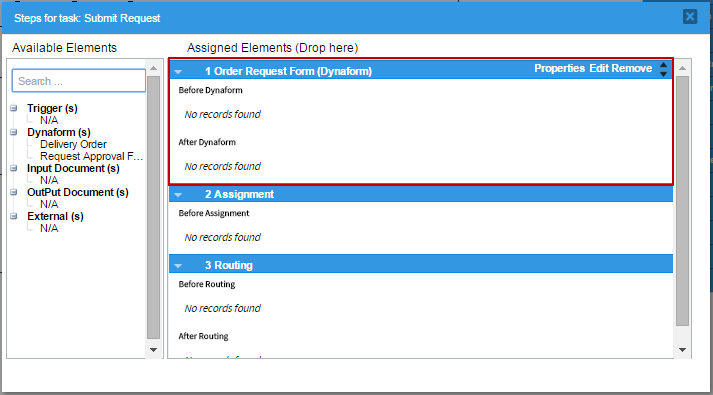
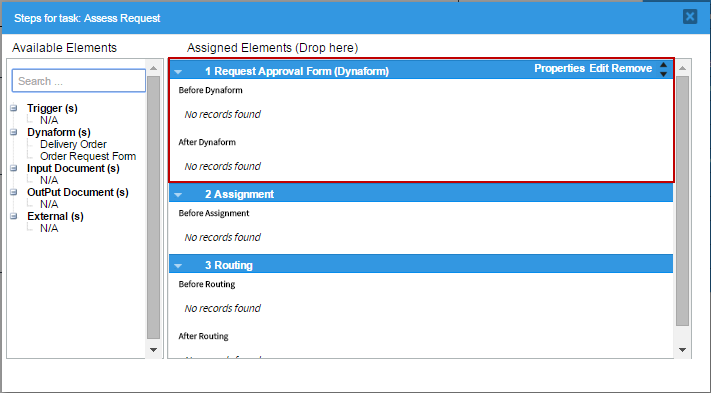
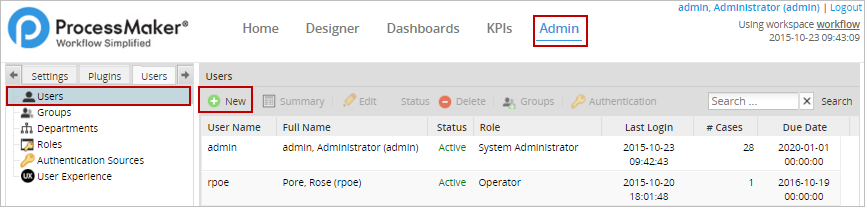
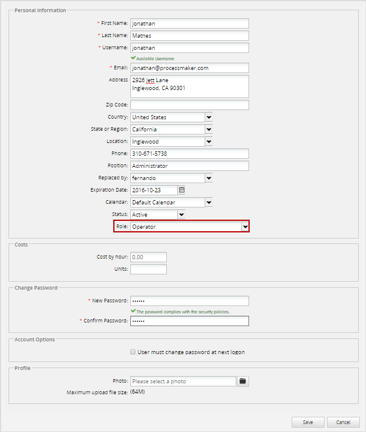
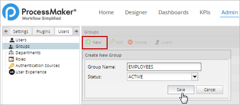
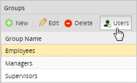
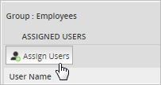
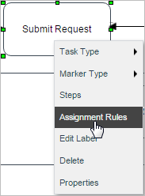
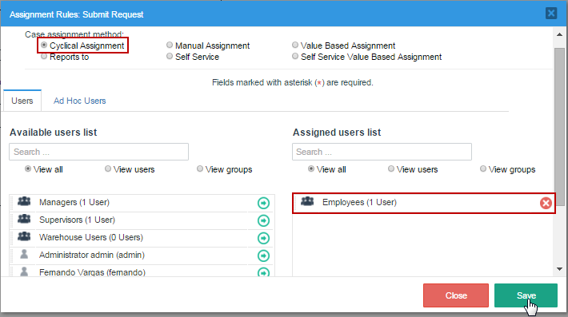
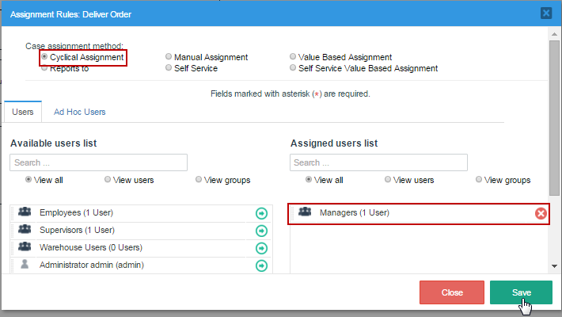

Once the process map, the variables, the Dynaforms and the routing rules have been created, the steps and assignment rules need to be configured.
Steps
In ProcessMaker, a step is a clearly defined action within a task. There are 5 types of steps in ProcessMaker: DynaForms, Input Documents, Output Documents, Triggers, and external steps.
To assign a step to a task, right click on it and select Steps. The available steps to be added will be listed in the left panel. They can be added to a task by dragging them from the left panel and dropping them in the right panel. To learn more, see this documentation. Now, add the “Order Request Form” as a step in the "Submit Request" task.

Do the same with the other tasks. Assign the "Request Approval Form" as a step in the “Assess Request" task.

Finally, add the "Delivery Order" DynaForm as a step in the "Deliver Order" task.

Assignment Rules
User(s) need to be assigned to work on all the tasks in the process. First, create the users that will be available to work on the tasks in the process by going to Admin > Users > New.

Create the users to work on the process. To save time, only the required fields need to be filled in for this example, but it is recommended to fill in all of the information about the users when using processes in production. Note that ProcessMaker will check whether the Username is already being by another user to ensure that each username is unique. The user's role determines what parts of the ProcessMaker interface they can access, and can give the user the ability to access sensitive information in cases that are assigned to other users. Enter a password for the user that can be used to log into ProcessMaker. When done click on Save.

The new user will be added to the list of users. Create as many users as needed. To learn how to manage these users, see this documentation.
To more easily manage user assignment to tasks in processes, create three user groups named "Employees”, “Supervisors” and “Managers”. Go to Admin > Users > Groups, click on New and enter the name of the new group in the window that opens.

After creating the three groups, users can be added to each group by selecting the group in the list and then clicking on Users.

In the window that opens, click on Assign Users.

Assign a users to the group by selecting them and then clicking on the > button. To add all users, click on >>.

Following the same steps, assign users to the rest of the groups as well.
Go back to the designer and edit the process "Purchase Request". Right click on the first task “Submit Request” and select Assignment Rules in the context menu.

The first section of the window that opens contains the available assignment rules available in ProcessMaker. Only one user at a time may be assigned to work on a task, and the assignment rules determine how that user is selected out of the pool of users assigned to the task. In this example, the assignment method in all the tasks will be “Cyclical Assignment” (which is the default).
The second section of the window contains two panels to assign users to the task. The users and groups available to be assigned to the task are listed in the left panel, and the right panel lists users and groups who are already assigned to the task. To assign the Employees group to the "Submit Request" task, either click on the -> arrow next to "Employees", or drag the group from the left panel and drop it into the right panel.

After assigning the group to the task, click on Save at the bottom of the window.
Now, follow the same steps to assign the “Supervisors” group to the "Assess Request" task and save the changes.

Finally, assign the Manager group to the third task, "Deliver Order", and save the changes.

After assigning the groups to the tasks, the process is now complete.